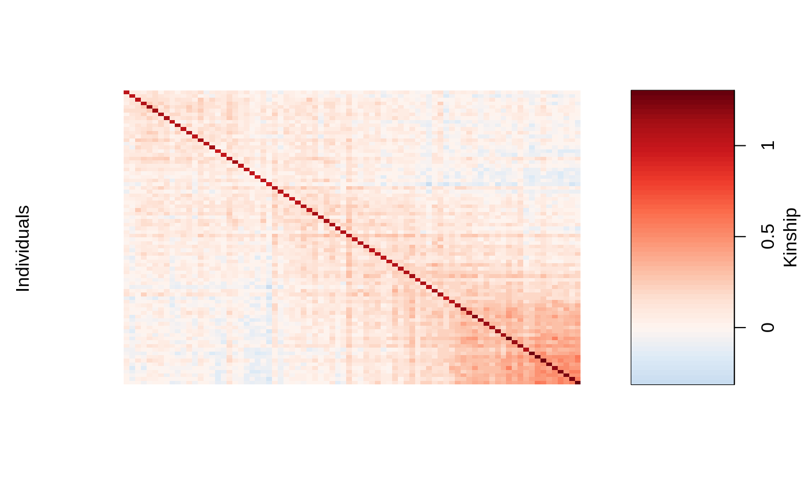
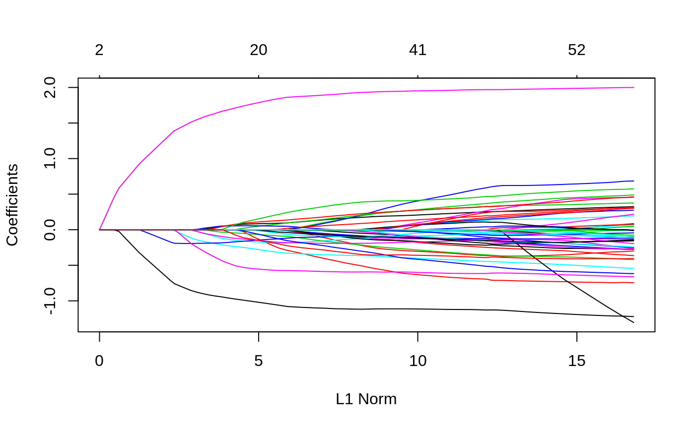
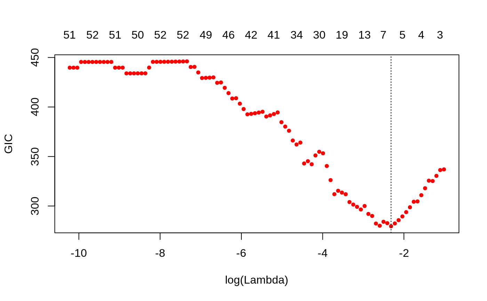
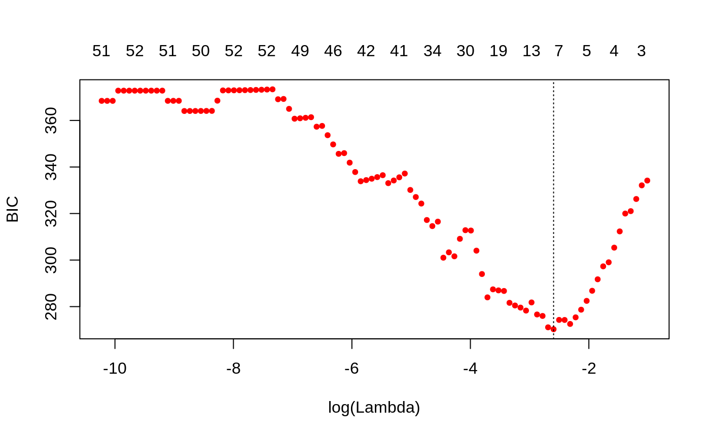
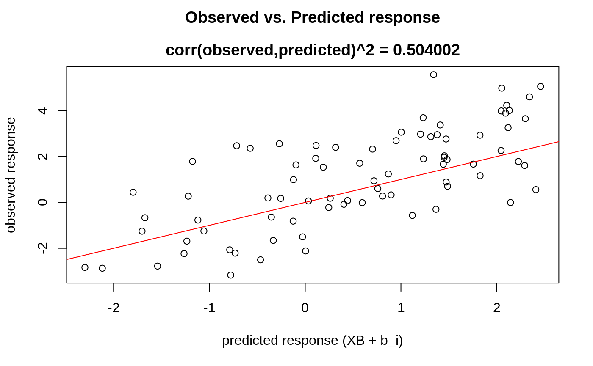

vignettes/introduction-to-ggmix.Rmd
introduction-to-ggmix.Rmdggmix is a package that fits penalized multivariable linear mixed models with a single random effect to account for population structure in genetic association studies. The penalty allows one to fit high-dimensional models, i.e., where the number of variables is much larger than the number of observations.
This package currently supports the lasso penalty. The group lasso penalty will soon be implemented.
We consider the following linear mixed model with a single random effect: \[\begin{equation} \mathbf{Y} = \mathbf{X} \boldsymbol{\beta} + \mathbf{b} + \mathbf{e} \end{equation}\] where the random effect \(\mathbf{b}\) and the error variance \(\mathbf{e}\) are assigned the distributions \[\begin{equation} \mathbf{b} \sim \mathcal{N}(0, \eta \sigma^2 \boldsymbol{\Phi}) \qquad \mathbf{e} \sim \mathcal{N}(0, (1-\eta)\sigma^2 \mathbf{I}) \end{equation}\] Here, \(\boldsymbol{\Phi}_{N_T \times N_T}\) is a known positive semi-definite and symmetric kinship matrix, \(\mathbf{I}_{N_T \times N_T}\) is the identity matrix and parameters \(\sigma^2\) and \(\eta \in [0,1]\) determine how the variance is divided between \(\mathbf{b}\) and \(\mathbf{e}\). The joint density of \(\mathbf{Y}\) is multivariate normal: \[\begin{equation} \mathbf{Y} | (\boldsymbol{\beta}, \eta, \sigma^2) \sim \mathcal{N}(\mathbf{X} \boldsymbol{\beta}, \eta \sigma^2 \boldsymbol{\Phi} + (1-\eta)\sigma^2 \mathbf{I}) \label{eq:prinen} \end{equation}\]
Define the complete parameter vector \(\boldsymbol{\Theta} = \left(\boldsymbol{\beta}, \eta, \sigma^2 \right)\). The negative log-likelihood for~ is given by \[\begin{align} -\ell(\boldsymbol{\Theta}) & \propto \frac{N_T}{2}\log(\sigma^2) + \frac{1}{2}\log\left(\det(\mathbf{V})\right) + \frac{1}{2\sigma^2} \left(\mathbf{Y} - \mathbf{X} \boldsymbol{\beta}\right)^T \mathbf{V}^{-1} \left(\mathbf{Y} - \mathbf{X} \boldsymbol{\beta}\right) \label{eq:LogLike} \end{align}\] where \(\mathbf{V} = \eta \boldsymbol{\Phi} + (1-\eta) \mathbf{I}\) and \(\det(\mathbf{V})\) is the determinant of \(\mathbf{V}\). Let \(\boldsymbol{\Phi} = \mathbf{U} \mathbf{D} \mathbf{U}^T\) be the eigen (spectral) decomposition of the kinship matrix \(\boldsymbol{\Phi}\), where \(\mathbf{U}_{N_T \times N_T}\) is an orthonormal matrix of eigenvectors (i.e. \(\mathbf{U} \mathbf{U}^T = \mathbf{I}\)) and \(\mathbf{D}_{N_T \times N_T}\) is a diagonal matrix of eigenvalues \(\Lambda_i\). Using some algebraic tricks, this can be simplified to
where \(\mathbf{\tilde{Y}} = \mathbf{U}^T \mathbf{Y}\), \(\mathbf{\tilde{X}} = \mathbf{U}^T \mathbf{X}\), \(\tilde{Y}_i\) denotes the \(i^{\textrm{th}}\) element of \(\mathbf{\tilde{Y}}\), \(\tilde{X}_{ij}\) is the \(i,j^{\textrm{th}}\) entry of \(\mathbf{\tilde{X}}\) and \(\mathbf{1}\) is a column vector of \(N_T\) ones.
We define the \(p+3\) length vector of parameters \(\boldsymbol{\Theta} := \left(\Theta_0, \Theta_1, \ldots, \Theta_{p+1}, \Theta_{p+2}, \Theta_{p+3}\right) = \left(\boldsymbol{\beta}, \eta, \sigma^2 \right)\) where \(\boldsymbol{\beta} \in \mathbb{R}^{p+1}, \eta \in [0,1], \sigma^2 >0\). In what follows, \(p+2\) and \(p+3\) are the indices in \(\boldsymbol{\Theta}\) for \(\eta\) and \(\sigma^2\), respectively. Define the objective function: \[\begin{equation} Q_{\lambda}(\boldsymbol{\Theta}) = f(\boldsymbol{\Theta}) + \lambda \sum_{j\neq 0} v_j P_j(\beta_j) \end{equation}\] where \(f(\boldsymbol{\Theta}):=-\ell(\boldsymbol{\Theta})\) is defined above, \(P_j(\cdot)\) is a penalty term on the fixed regression coefficients \(\beta_1, \ldots, \beta_{p+1}\) (we do not penalize the intercept), controlled by the nonnegative regularization parameter \(\lambda\), and \(v_j\) is the penalty factor for \(j\)th covariate. These penalty factors serve as a way of allowing parameters to be penalized differently. Note that we do not penalize \(\eta\) or \(\sigma^2\). The penalty term is a necessary constraint because in our applications, the sample size is much smaller than the number of predictors. An estimate of the regression parameters \(\widehat{\boldsymbol{\Theta}}_{\lambda}\) is obtained by \[\begin{equation} \widehat{\boldsymbol{\Theta}}_{\lambda} = \arg\min_{\boldsymbol{\Theta}} Q_{\lambda}(\boldsymbol{\Theta}) \label{eq:estimator} \end{equation}\]
The package can be installed from GitHub via
install.packages("pacman") pacman::p_load_gh('sahirbhatnagar/ggmix')
We give a quick overview of the main functions and go into details in other vignettes. We will use the simulated data which ships with the package and can be loaded via:
library(ggmix) data("admixed") names(admixed) #> [1] "ytrain" "ytune" "ytest" "xtrain" #> [5] "xtune" "xtest" "xtrain_lasso" "xtune_lasso" #> [9] "xtest_lasso" "Xkinship" "kin_train" "kin_tune_train" #> [13] "kin_test_train" "mu_train" "causal" "beta" #> [17] "not_causal" "kinship" "coancestry" "PC" #> [21] "subpops"
For details on how this data was simulated, see help(admixed).
There are three basic inputs that ggmix needs:
1) \(Y\): a continuous response variable
2) \(X\): a matrix of covariates of dimension \(N \times p\) where \(N\) is the sample size and \(p\) is the number of covariates
3) \(\boldsymbol{\Phi}\): a kinship matrix
We can visualize the kinship matrix in the admixed data using the popkin package:
# need to install the package if you don't have it # pacman::p_load_gh('StoreyLab/popkin') popkin::plot_popkin(admixed$kin_train)

We will use the most basic call to the main function of this package ggmix. This function by default will fit a \(L_1\) penalized linear mixed model (LMM) for 100 distinct values of the tuning parameter \(\lambda\). It will choose its own sequence:
fit <- ggmix(x = admixed$xtrain, y = admixed$ytrain, kinship = admixed$kin_train) names(fit) #> [1] "result" "ggmix_object" "n_design" "p_design" "lambda" #> [6] "coef" "b0" "beta" "df" "eta" #> [11] "sigma2" "nlambda" "cov_names" "call" class(fit) #> [1] "lassofullrank" "ggmix_fit"
We can see the solution path for each variable by calling the plot method for objects of class ggmix_fit:
plot(fit)

We can also get the coefficients for given value(s) of lambda using the coef method for objects of class ggmix_fit:
coef(fit, s = c(0.1,0.02)) #> 51 x 2 Matrix of class "dgeMatrix" #> 1 2 #> (Intercept) -0.03715135 0.247105426 #> X23 0.00000000 0.098030248 #> X36 0.00000000 -0.013022250 #> X38 0.00000000 0.005378361 #> X40 0.00000000 0.004028934 #> X53 0.00000000 0.000000000 #> X74 0.00000000 -0.020729942 #> X83 0.00000000 0.000000000 #> X114 0.00000000 -0.296774993 #> X139 0.00000000 0.098848550 #> X143 0.00000000 -0.015094909 #> X168 0.00000000 -0.331811094 #> X176 0.00000000 0.000000000 #> X244 0.00000000 0.000000000 #> X246 0.00000000 -0.005869031 #> X249 0.00000000 0.000000000 #> X266 0.00000000 0.046402450 #> X271 0.00000000 -0.185995388 #> X273 0.00000000 0.000000000 #> X282 0.00000000 -0.008280108 #> X286 0.00000000 0.000000000 #> X300 0.00000000 -0.096994400 #> X302 -0.17330971 -0.116695776 #> X312 0.00000000 0.000000000 #> X315 0.00000000 -0.182667959 #> X330 0.00000000 0.000000000 #> X336 0.00000000 0.138864533 #> X344 0.00000000 -0.009241378 #> X348 0.00000000 0.000000000 #> X352 0.00000000 -0.069254814 #> X375 0.00000000 0.000000000 #> X383 0.00000000 0.000000000 #> X403 0.00000000 0.021805050 #> X404 0.00000000 0.000000000 #> X420 0.00000000 0.000000000 #> X422 0.00000000 0.000000000 #> X431 0.00000000 0.000000000 #> X435 0.00000000 0.000000000 #> X441 0.00000000 0.000000000 #> X447 0.00000000 0.000000000 #> X468 0.00000000 0.000000000 #> X485 0.00000000 0.000000000 #> X503 0.00000000 -0.575054421 #> X512 0.00000000 -0.042208022 #> X515 0.00000000 0.000000000 #> X516 0.00000000 0.248284875 #> X407 0.00000000 -0.158077877 #> X507 0.00000000 0.000000000 #> X524 1.34292812 1.863827767 #> X538 -0.71437257 -1.081309751 #> X243 0.00000000 -0.229712870
We can also get predictions (\(X\widehat{\boldsymbol{\beta}}\)) using the predict method for objects of class ggmix_fit:
We use the Generalized Information Criterion (GIC) to select the optimal value for \(\lambda\). The GIC takes the form
\[GIC_{\lambda} = -2 \ell(\widehat{\boldsymbol{\beta}}, \widehat{\sigma}^2, \widehat{\eta}) + a_n \cdot \widehat{df}_{\lambda}\]
where \(\ell(\cdot)\) is the log-likelihood evaluated at the converged values of the parameters, \(\widehat{df}_{\lambda}\) is the number of non-zero elements in \(\widehat{\boldsymbol{\beta}}_{\lambda}\) plus two (representing the variance parameters \(\eta\) and \(\sigma^2\)), and \(a_n\) is a non-negative penalty parameter. The BIC has \(a_n = \log(n)\), and AIC has \(a_n = 2\). The user can specify the value of \(a_n\) that they want. The default is \(a_n = log(log(n)) * log(p)\) which corresponds to a high-dimensional BIC (HDBIC):
# pass the fitted object from ggmix to the gic function: hdbic <- gic(fit) class(hdbic) #> [1] "ggmix_gic" "lassofullrank" "ggmix_fit" # we can also fit the BIC by specifying the an argument bicfit <- gic(fit, an = log(length(admixed$ytrain)))
We can plot the HDBIC values against \(\log(\lambda)\) using the plot method for objects of class ggmix_gic:
plot(hdbic)

The optimal value for lambda according to the HDBIC is (i.e. the \(\lambda\) that leads to the minium HDBIC):
hdbic[["lambda.min"]] #> [1] 0.09862269
We can also plot the BIC:
plot(bicfit, ylab = "BIC")

bicfit[["lambda.min"]] #> [1] 0.07460445
We can use the object outputted by the gic function to extract the coefficients using the coef method for objects of class ggmix_gic:
coef(hdbic) #> 51 x 1 sparse Matrix of class "dgCMatrix" #> 1 #> (Intercept) -0.03660806 #> X23 . #> X36 . #> X38 . #> X40 . #> X53 . #> X74 . #> X83 . #> X114 . #> X139 . #> X143 . #> X168 . #> X176 . #> X244 . #> X246 . #> X249 . #> X266 . #> X271 . #> X273 . #> X282 . #> X286 . #> X300 . #> X302 -0.17607392 #> X312 . #> X315 . #> X330 . #> X336 . #> X344 . #> X348 . #> X352 . #> X375 . #> X383 . #> X403 . #> X404 . #> X420 . #> X422 . #> X431 . #> X435 . #> X441 . #> X447 . #> X468 . #> X485 . #> X503 . #> X512 . #> X515 . #> X516 . #> X407 . #> X507 . #> X524 1.34951500 #> X538 -0.72052613 #> X243 .
We can also extract just the nonzero coefficients:
coef(hdbic, type = "nonzero") #> 1 #> (Intercept) -0.03660806 #> X302 -0.17607392 #> X524 1.34951500 #> X538 -0.72052613 #> eta 0.99000000 #> sigma2 1.60476289
Finally we can also make predictions from the hdbic object, which by default will use the model corresponding to the optimal tuning parameter:
predict(hdbic, newx = admixed$xtest) #> 1 #> id26 2.31027410 #> id39 0.86922183 #> id45 -0.12814532 #> id52 -0.03660806 #> id53 -0.21268198 #> id79 1.94189580 #> id80 2.48634802 #> id85 2.48634802 #> id94 1.04529575 #> id96 1.13683302
We can also plot some standard diagnostic plots such as the observed vs. predicted response, QQ-plots of the residuals and random effects and the Tukey-Anscombe plot. These can be plotted using the plot method on a ggmix_gic object as shown below.
plot(hdbic, type = "predicted", newx = admixed$xtrain, newy = admixed$ytrain)
